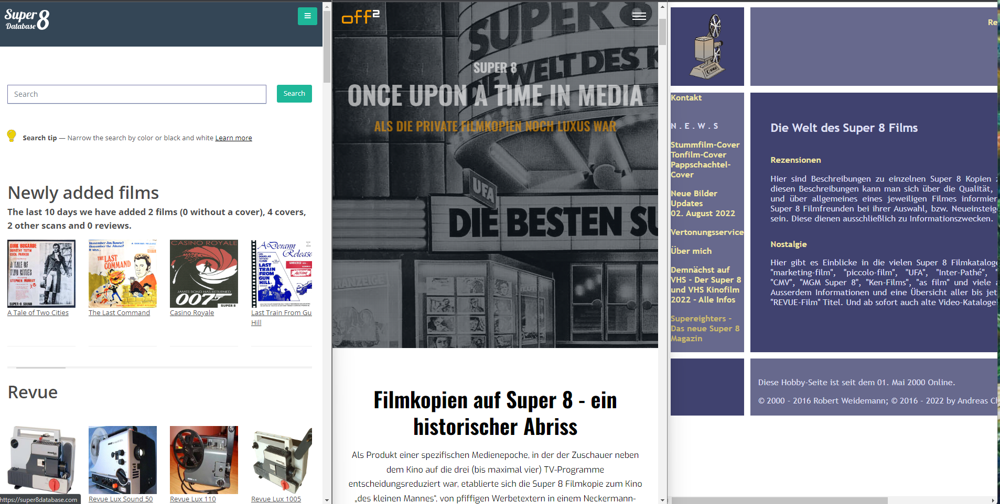

Researching Super 8
Our Collaboration with Collectors

In Mainz, our research group is collaborating since 2021 with a group of collectors of Super 8 film material and related paratexts such as catalogs, magazines etc. Following a citizen-science principle we want to acknowledge how their experience, expertise and generosity has contributed to our own research.
Andreas Chmielewski is a German collector of small-gauge films and in particular of Super8 format. He curates the website Super8rezensionen. This exists since 2000 and was first developed by Robert Weidemann. Main aim of the project is to describe and rate Super8 movies, to discuss the quality of the edit or of the color-copy of. Andreas has kindly borrowed us all his Super8 catalogs and allowed us to digitize them for further research.
Joachim Schmidt is a German collector and the owner and curator of the website Off2.de a website dedicated to the history of Super8, which collects not only historical material and information about Super8 distribution in Germany but also features several video interviews (hosted on its youtube channel) with collectors, experts and ex-employees of Companies selling or working with Super8. Joachim was invited by our research group to present on Super8 history in Germany for an undergraduate course at the Film and Mediadramaturgy Institute in Mainz.
Eivind Mork (and his wife Heidi) developed in 2016 the website Super8database.com, which is a database and repository of Super8 movies distributed internationally in the past. The data is, if not stated otherwise, licenced by CC-BY 4.0. That’s a Creative Commons licence that allows us to work with the data in a way that meets our academic needs as long as we name Eivind Mork. A real advantage is that you can download the data in different file formats like Excel table or JSON, so that you can decide which format suits better. In our teaching and research we profited from the data collected and shared on Super8database.
We have reported on our collaboration at the NECS (Network for Cinema and Media Studies) Conference in Oslo in June 2023. Joachim and Eivind have published a short report on our presentations on their website. You can read it here:
From Off2.de (in German)
From Super8database.com (in English)